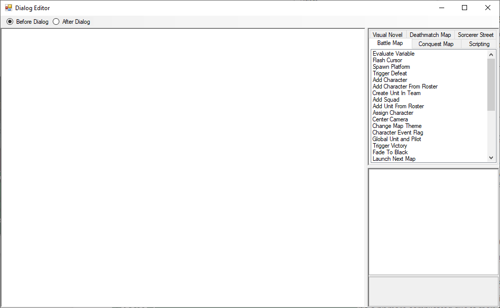
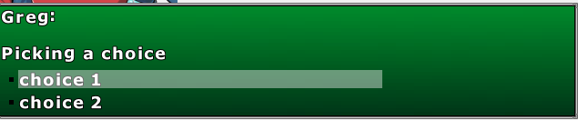

Dialog Editor
Edit Current Dialog: After pressing this button you’ll open the dialog editor. We won’t cover how to make scripts as it is covered by the Cutscene editor but you’ll need to know the different between the Before Dialog and After Dialog choices at the top.
Before Dialog: This cutscene is executed when the player enter this particular dialog for the first time. This is usually where you do your scripting.
After Dialog: This cutscene is executed when the player exist this dialog to go for another one. This is particularly useful in the parent dialog of multiple choices. If you want to play music when the player pick a choice, you can do it here in a single dialog instead of starting music in each choice to cover all everything.
